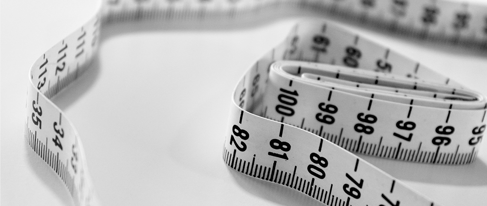

Liposuction
The liposuction procedure is primarily a cosmetic surgical procedure, done to remove excess fat from areas of the body in which fat is difficult to get rid of by exercise and diet.
Let Us Call You

Sports medicine
Sports medicine is concerned with the diagnosis and treatment of athlete injuries, and it is also co...
Radiation therapy for cancer
The Radiotherapy team works with an integrated multi-specialty team of doctors, surgeons, nursing st...
Chemotherapy and immunotherapy
Ilajak Medical Provides care services for tumor patients in its specialized medical centers in Istan...
Thoracic Surgery
Thoracic surgery involves treating diseases that affect the organs inside the chest, including the e...
What is Liposuction?
Liposuction procedure is primarily a cosmetic surgical procedure, done to remove excess fat specifically from areas of the body in which fat is difficult to get rid of by exercise and diet.
In liposuction, the surgeon removes fat from the targeted areas where too much fat accumulates, such as the waist, thighs, buttocks, back, arms, and sometimes face to improve body contour.
Is Liposuction Right For Me?
Liposuction is classified as a surgical procedure, and this kind of surgery is not without risks and complications.
Doctors do not recommend liposuction for patients with cardiovascular disease, deep vein thrombosis or diabetes, or any chronic illness that can cause a delay in wound healing and tissue regeneration.
Experts also think the perfect candidate for liposuction procedure must own thick, flexible and elastic skin, and preferably is not a smoker, and has good muscle tone, these factors help in getting optimal results and play an active role in the success of the procedure.
What Are The Surgical Methods Used In Liposuction?
In liposuction, the surgeon uses a thin needle-like tube called a cannula, this cannula is attached to a device that creates a negative pressure “vacuum” to aspirate or suck out fat accumulated under the skin.


There are several methods used in liposuction:
Tumescent Liposuction:
It is the most popular method and the most commonly used. In tumescent liposuction, the surgeon injects a saline solution into the targeted area where fat needs to be removed. This solution contains water, salt, a local anesthetic, and adrenaline that helps constrict small blood vessels, which decreases pain and blood loss throughout the procedure.
Ultrasound-assisted liposuction:
The surgeon applies an ultrasonic energy-emitting device to the fat under the skin to dissolve it and facilitate its removal by suction.
Laser-assisted liposuction:
In this method laser is used to melt away the fat accumulated under the skin, to be removed later by suctioning it.

After Liposuction Procedure
Generally, you don’t need to stay in the hospital after liposuction.
You may experience some bruises and blue discoloration in the skin, swelling or mild pain for several days, and you may need to wear compression bandages for 1 to 2 months after the procedure to control swelling.
Your doctor usually prescribes an antibiotic to avoid infection and inflammation in the wounds and under the skin, you may also take some mild painkillers to decrease pain and inflammation.
You can return to work and resume your normal life routine in a couple weeks after the surgery.
What Are The Risks of Liposuction?
No matter how simple liposuction procedure may seem to you, it is not without potential risks and complications, just like any other surgical procedure.
Among the most important complications that may occur during or after the operation:
- Complications from anesthesia
- Bleeding after the operation
- Infections and inflammation at the site of the operation
- Fluid accumulation and severe swelling under the skin
- A fat clot in the lungs
Are The Results After Liposuction Permanent?
After liposuction procedure, you may gain additional weight again if you are not serious about watching your diet. To maintain the results of the surgery, you must monitor your diet and commit to regular exercises.
Important Point
Do you have an inquiry? Contact us - For FREE Consultation.
Ilajak Medical© | A passion for care